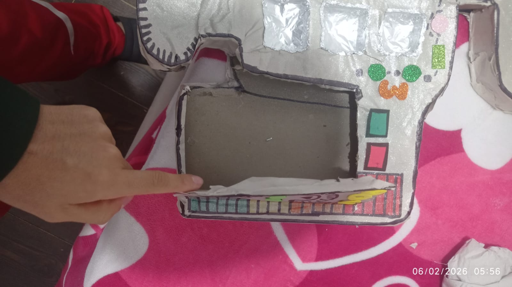

Resolución de problemas frecuentes.

Actualizar la versión del prototipo pasando del material desechable a una estructura más estable de madera MDF o plástico acrílico, manteniendo el enfoque económico. Esto permitirá mayor durabilidad, mejor presentación estética y conexiones eléctricas más seguras, evitando falsos contactos que actualmente se producen con cartón y aluminio.
Sustituir los cables de aluminio por cables conductores de cobre recubiertos, ya que ofrecen mejor conductividad eléctrica y mayor estabilidad. El aluminio genera interferencias y detecciones erróneas. Con cables adecuados se mejora la precisión del sensor y se evita que el juego se active sin que realmente exista contacto.
Mejorar la programación de la pantalla LCD para que no solo muestre números aleatorios, sino que también brinde retroalimentación al estudiante. Es necesario incluir mensajes como “¡Perdiste!”, “Sigue intentando” o “¡Ganaste!”, con el fin de que el niño comprenda claramente lo que ocurre durante el juego.

Implementar mejoras en el código para evitar errores frecuentes, como reinicios inesperados o detecciones múltiples. Se recomienda usar resistencias pull-down, filtros de señal y retardos programados (debounce), lo que permitirá una lectura más estable del sensor y un funcionamiento más profesional del proyecto.
Añadir nuevos elementos didácticos como niveles de dificultad, sonidos diferenciados y luces LED de colores según el estado del juego. Estas mejoras transformarán el prototipo en una herramienta pedagógica más completa, interactiva e inclusiva, adecuada para diferentes edades y necesidades educativas.